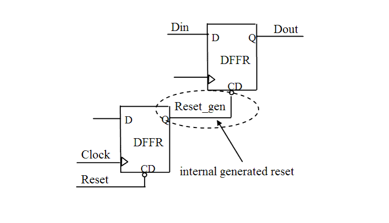

| Description | This rule fires when Leda detects internally generated resets in the design. It is better to make all resets observable and controllable from the chip boundary.Arguments:
|
| Policy | DESIGN |
| Ruleset | RESETS |
| Language | VHDL/Verilog |
| Type | Hardware |
| Severity | Error |
This is an example of invalid Verilog code, followed by a circuit diagram that illustrates the problem:
module ntl_rst06_top ;
...
wire Reset_gen; // a internally generated reset
always @(posedge Clock) //generated internal reset
begin
if (Reset)
Reset_gen <= 0;
else Reset_gen <= net_01;
end
always @(posedge Clock)
begin
if (Reset_gen) // NTL_RST06 fires -- internally generated reset
Dout <= 0;
else Dout <= Din;
end
endmodule
